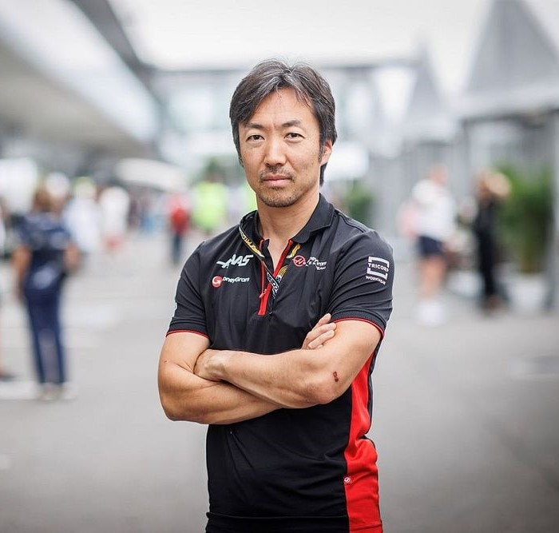
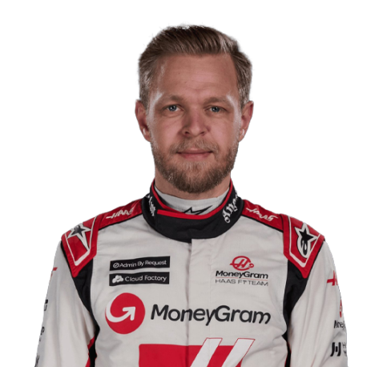

Team
Meet the team.
Team Principal

Ayao Komatsu
Drivers

Kevin Magnussen
Nico Hulkenberg
Meet the team.
Ayao Komatsu
Kevin Magnussen
Nico Hulkenberg
Guenther Steiner has been Team Principal at Haas since the squad first arrived in the sport, and he is well-known for his charismatic, no-nonsense personality. Steiner became popular with many F1 fans thanks to his appearances on Netflix's Drive To Survive series, where he has often been heard to swear extensively.The team's headquarters are located in Kannapolis, North Carolina, in the United States, alongside sister team and NASCAR entrant Stewart-Haas Racing, though the two outfits are separate entities. Haas also have a forward base in Banbury, UK, for the purpose of turning cars around between races during the European part of the calendar, whilst their power units are supplied by Ferrari in Italy.
Haas became the first American constructor to compete in F1 since the unrelated Haas Lola outfit raced in the 1985 and 1986 seasons. The 2016 Australian Grand Prix saw Haas make their debut with drivers Romain Grosjean and Esteban Gutierrez, and it went brilliantly.
Another remarkable result followed at the Bahrain Grand Prix, when Grosjean finished in fifth place. It was Haas' best result that year, and Grosjean scored all of the team's 29 points as Gutierrez struggled. Nevertheless, it was the best debut for a new Formula 1 team this century.
Having finished eighth in the 2016 F1 Constructors' Championship, Haas repeated that feat with Grosjean and former McLaren and Renault driver Kevin Magnussen, who joined the team for the 2017 Formula 1 season.
The 2018 Formula 1 season saw Haas often at the front of the midfield battle, only behind Mercedes, Ferrari and Red Bull. It was nearly an incredible beginning to their campaign at that year's Australian Grand Prix.
A fuel infringement and an illegal floor led to disqualifications in the United States and Italian Grands Prix respectively, which hampered Haas' chances to beat Renault in the Constructors' Championship. Nevertheless, the team ended the season in fifth, which remains their best F1 campaign to date.
Haas had been on a high in 2018, but endured a tough season in 2019 as they struggled to find the optimal tyre working window throughout the year. The Australian Grand Prix went well for the team as Magnussen finished sixth, but that would be Haas' best result of the campaign.The off-track talk became the other big story for Haas as their title sponsor, Rich Energy, caused mayhem. Leading up to the British Grand Prix, the Rich Energy Twitter account announced that the sponsorship deal had been terminated, due to poor performances. This was denied by Haas and Rich Energy's shareholders.
Magnussen and Grosjean both left Haas and Formula 1 at the end of 2020. The team instead opted to go for a bold rookie driver pairing for 2021 in the form of Mick Schumacher and Nikita Mazepin.Even before the new season had begun, Haas admitted that they were using 2021 as a transitional year and were fully focused on 2022, when new technical regulations are introduced into F1.
The 2023 season did not go smoothly for the American F1 team. They finished last in the standings because the car was not competitive enough to contend for points. Haas faced numerous issues with tire wear, causing them to lose ground compared to their competitors. Following the conclusion of the 2023 season, the contract of team principal Günther Steiner was not renewed due to disappointing performances. Ayao Komatsu will assume his role within the Haas F1 Team.
-
-